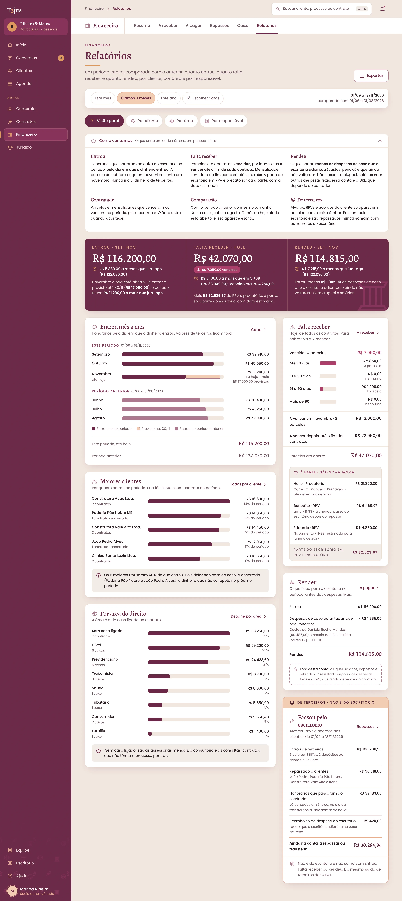

Visão geral do período (sócia dona)
Seletor de período (Este mês, Últimos 3 meses, Este ano, Escolher datas) e "Como contamos" aberto. Os três números no campo vinho: Entrou, Falta receber e Rendeu, cada um com a comparação escrita. Entrou mês a mês, com o previsto que falta de novembro e o período anterior; maiores clientes e áreas, cada um levando ao detalhe; falta receber por idade, com RPV e precatório à parte; a conta do Rendeu; e, numa folha âmbar à parte, o que passou pelo escritório de terceiros.
Abrir: relatorios.html?estado=visao (estreite a janela para ver o celular)